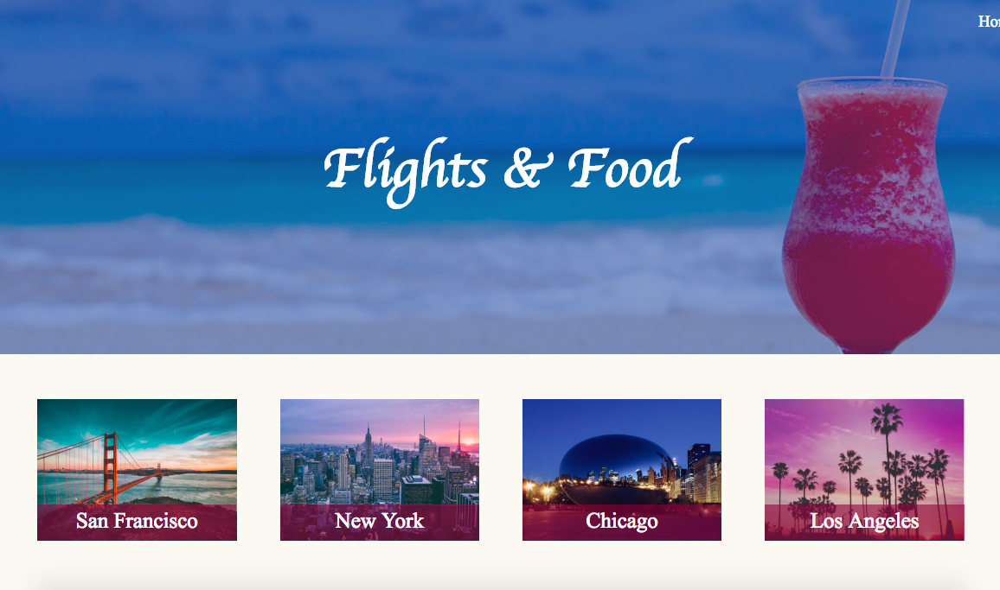
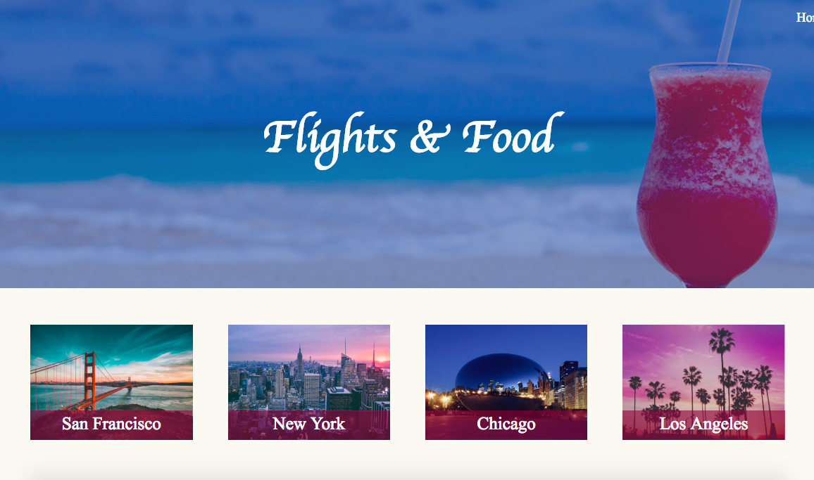

Flights & Food is a final group project for my Modern Web Programming class, where I co-developed a website with my great teammates Jie He and Fan Feng. This is the first time that I stepped up to take the designer role of the team: I did the wireframing, UI design, and the majority of the CSS, while my teammates implemented most of the functionality. For the class, we only needed to code the frontend: backend API was provided by the instructors, but we were encouraged to use third-party APIs as well.
The Product
Flights & Food is a website that helps travelers better plan their trips: we selected four popular large cities and enable users to search for flights and restaurants for each city. Users can then save their favorite flights and food selections, and later view those at the “My Trips” page.
 

Wireframing and storytelling
Normally, when starting a new project, I would list out a set of project requirements/features, separate the essentials from the nice-to-haves, and then create the wireframes around those feature requirements. This time, however, after the team decided upon the general project idea, I went ahead and created the wireframes first. It was as if I first saw the product in my head before I could describe it in words. I then listed out the features according to the wireframes.
I presented my work to my team in the same order, and it worked surprisingly well. I first walked them through the wireframes. I tried to tell the story of how a user would interact with our final product. Upon seeing a vision of the final product, the team was very much onboard. I then showed them a distilled feature list, and we discussed how to implement each feature in more engineering terms.
I assumed the designer’s role, yes, but I did not have authority over any teammates. Before I presented, I wondered how I would convince someone else to implement my design. I learnt that part of the answer lies in good storytelling. Wireframes and personas can aid the storytelling of how users interact with products, and that story in turn can provide a roadmap of where the product and the team need to head to. Good stories interest people, and even let you influence without authority.